提示词润色
粗略的需求会在开工前变成结构化的简报。最后,工作报告还会为下一次建议一个更好的提示词。

0.2.0 新功能
现在 hivedesk 打开时是一座小城: 你的电脑是一栋有房间的建筑,智能体住在里面,每个任务都会穿过这些房间直到完成。朋友用六个词就能加入,还会把自己的电脑一起带来。
团队里的每个工作者都是一个智能体,有自己的主房间、等级和 XP(完成工作得 10,审查得 4,测试得 3,任务无需循环再加 5)、工具,以及最多 40 条简短记录的记忆。
Lobby、Design、Code、Review、Test、Ops 和 Library。智能体在某个房间工作时,只能使用该房间的工具。Ops 仅限主机使用,扩展还可以添加房间。
任务来自你、来自 Mel 的计划,或来自退回工作的智能体。空闲的智能体按技能、等级和机器负载竞标;每一次认领、流转和裁定都是可以回放的事件。
机器、智能体或任务的所有者说了算。访客的任务在开启审批模式下运行,不能执行命令或删除,也绝不会进入 Ops。更喜欢旧版桌面?用 --no-city 启动。
npx hivedesk --demo 的真实截图,它会播放一个城市场景: 一位朋友用六个词加入,Dev 借用她的 GPU 三轮,一个任务依次经过 Design、Code、Review、Test 直到完成。每个演示事件都有标记。尚未支持: Test 运行的是静态检查(HTML、链接、JS 语法、CSS、JSON),而不是你自己的测试套件;借用是按请求限额的,不是长期共享。
短片
一段真实应用的短片: 向导为 GPU 选好模型,Mel 写出简报,团队动手构建,你来批准,工作最后以一个更好的提示词和一个拉取请求收尾。旁白以葡萄牙语显示在画面上,并配有英文字幕。
在这里试试
Mel 的简报
输入一个需求,或从上面选一个。
任务,一轮一轮来
在本页面中运行的脚本化预览。你输入的内容不会离开浏览器;真正的团队在你的电脑上用本地模型运行。
工作原理
在需求框里写下你想要的,怎么想就怎么写。也可以直接说: 按住 Ctrl Space 时,语音模式会聆听。
Mel 会把它变成一份简报: 目标、要构建什么、约束、检查,以及待确认的问题。在你使用、编辑它或保留原话之前,工作会一直等待。
Mel 把简报拆成任务图,并把每个任务交给一个工作者。做得好的工作会变成 Mel 可以复用的剧本。
工作者轮流使用同一个本地模型,把真实文件写进你的工作区。每次写入都是一个 diff;命令和删除要等你批准。
QA 运行检查,把没通过的项作为修复任务退回,直到页面通过。
连接 GitHub 后,团队可以为每项工作创建分支、提交、推送,并打开带 CI 状态的拉取请求。每个操作都会先以计划的形式展示,只有你确认后才会执行。
功能
粗略的需求会在开工前变成结构化的简报。最后,工作报告还会为下一次建议一个更好的提示词。
它读取你的显存和内存,并用一句话说明原因。
邀请朋友进入 Code 窗口: 你们编辑同一批文件,能看到彼此的光标。朋友的保存会以 diff 的形式等你批准。
每项工作一个分支,提交、推送、拉取请求和 CI 状态。每一步都是由你确认的计划。Mel 起草更新日志条目;在你批准之前,什么都不会写入。
按住 Ctrl Space 说话。在执行任何操作之前,比如提交或推送,Mel 会把计划读出来,等你明确说“好”。
实时切换,参照对比度报告编辑,或者描述一款(“海边的日落”),团队就会把它设计出来。
从文件夹、zip 或 URL 安装,或者让团队做一个。每个扩展都会申请自己的权限,并在沙箱中运行。
拥有更大 GPU 的朋友用六个词完成配对。传输的只有提示词和回答。
Hive 跟随浏览器的语言,也可以在设置里选择。实时切换。
服务器只绑定 127.0.0.1,每次运行使用一个秘密令牌。没有账户,没有统计分析。
按项目、按人保存的小而有上限的笔记,外加每项工作一个会话文件。几条相关的记录会放进下一个提示词。每一条都可以置顶、编辑或忘掉。
默认在本地运行。你可以为云端模型添加自己的 API 密钥,也可以按工作者分别设置。密钥保存在这台电脑的密钥库里;发送给该服务商的提示词和文件内容会离开你的电脑,窗口会明确告诉你。
下一个版本
团队正在为下一个版本开发的两件事。下面是它们预期的样子;正式发布前细节可能会有变化。
目前,顺利完成的工作会保存为剧本,Mel 会在类似的需求中复用它。接下来,Mel 还会拥有一个约 500 份专家剧本的库(落地页、带校验的表单、README、测试计划等等),并在团队开工前为每个任务挑出最贴近的几份。
目前,在需求框里提的需求会启动一项工作,私信可以指导某个工作者。接下来,在任何聊天里提出工作请求,无论是 #general 还是发给 Dev、Designer 或 QA 的私信,也会启动真正的工作,同样有简报、计划、审批和报告。
办公室模式
在顶栏切换到办公室模式,桌面就会变成一个小小的蜂巢办公室。每个姿态都来自引擎的真实事件: 谁在思考,谁在等待模型的轮次,一个任务被移交,测试通过了。把 Mel 看板上的便签拖到一只蜜蜂身上,就能把任务交给它。
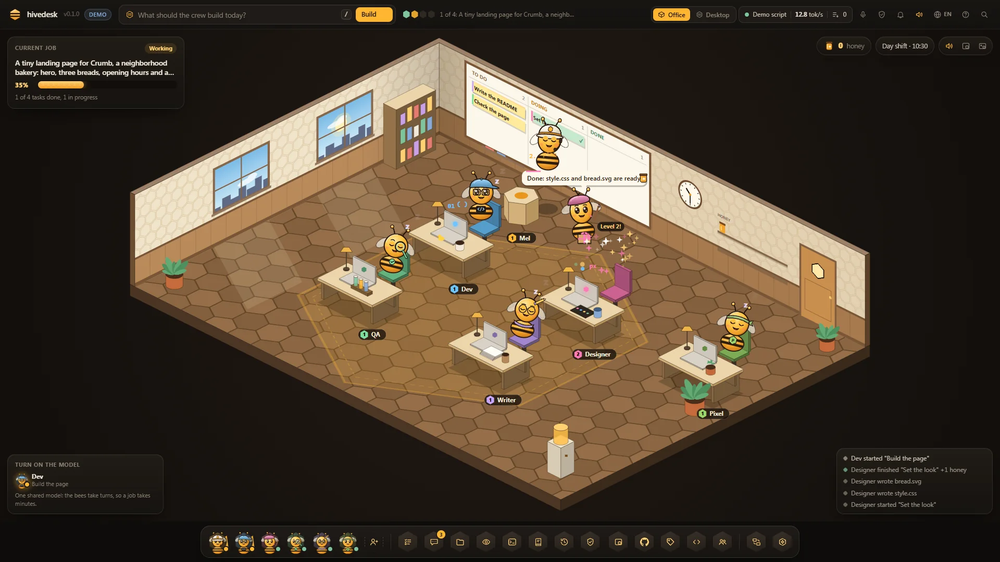
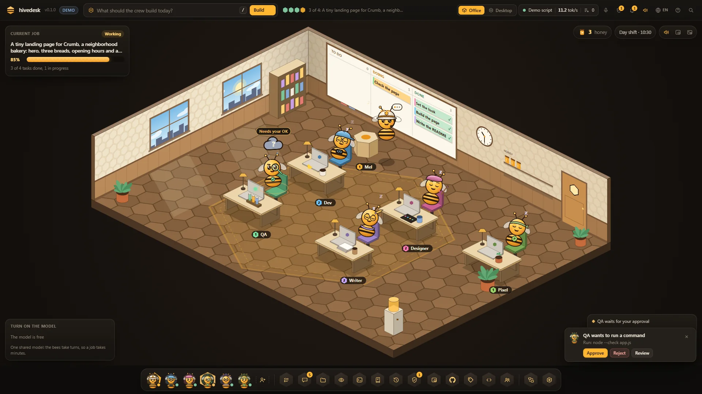
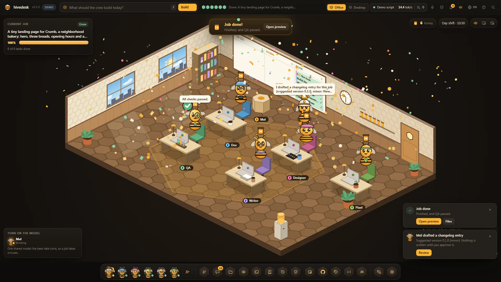
使用 npx hivedesk --demo 的办公室模式真实截图。每个演示事件都标记为演示。
Hive 内部
Mel 会用聚光灯逐一照亮桌面的各个部分,带你熟悉。可以从帮助或命令面板中重新播放。
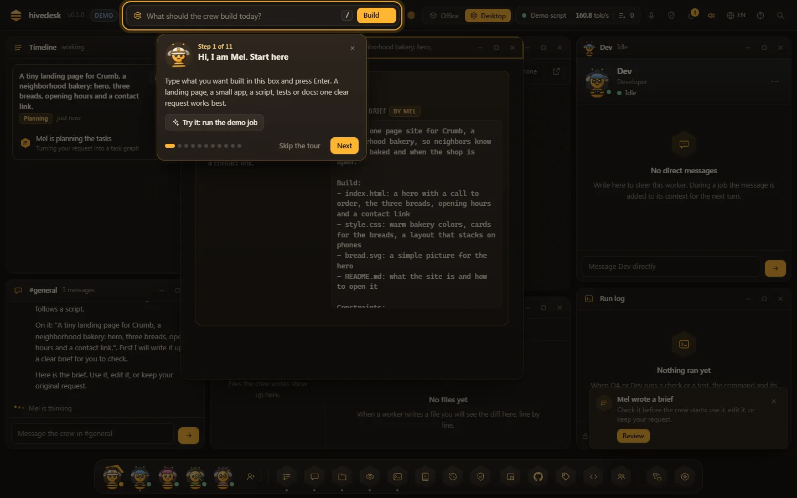
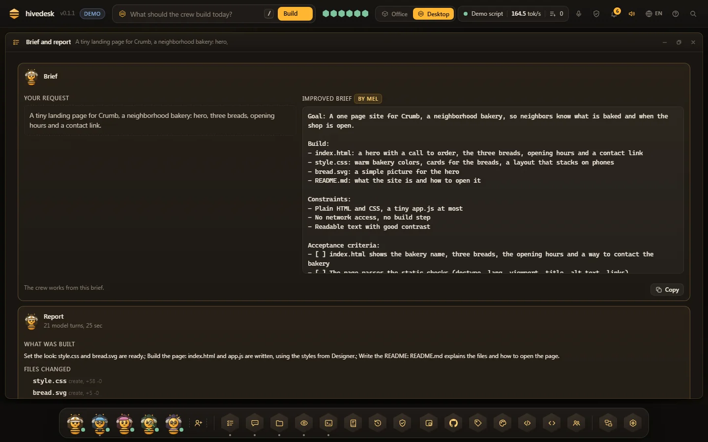
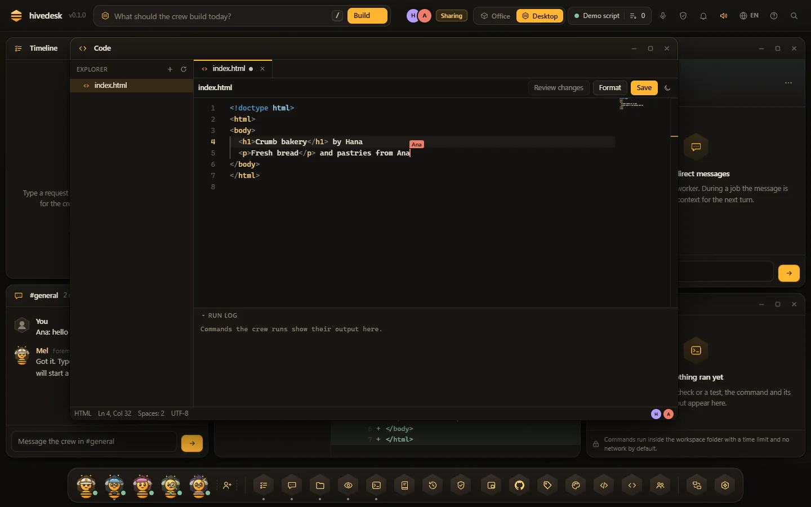
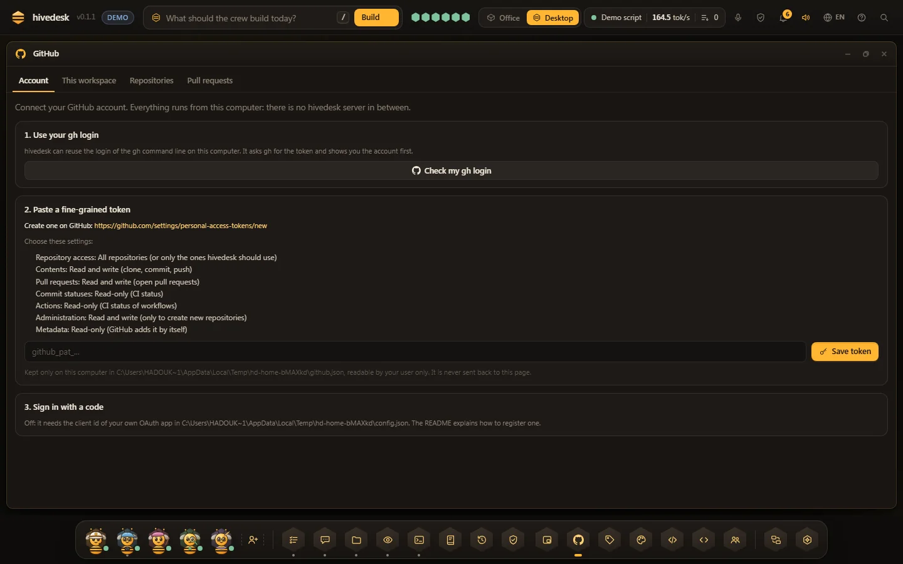
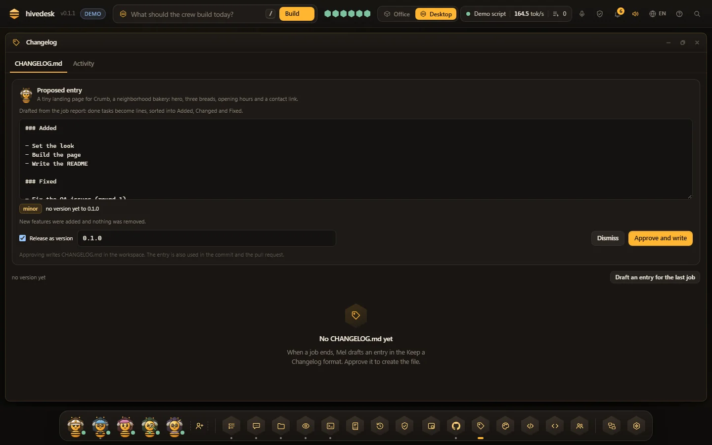
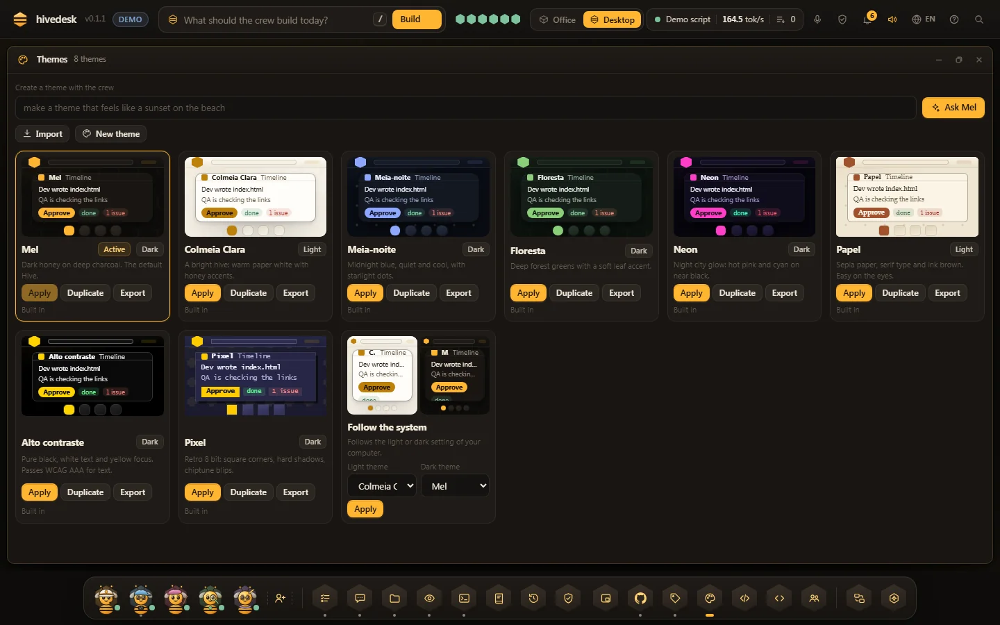
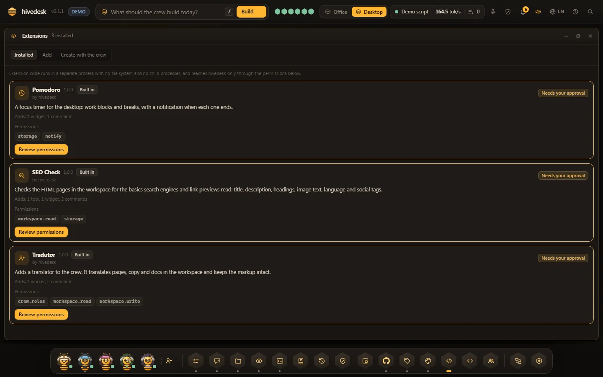
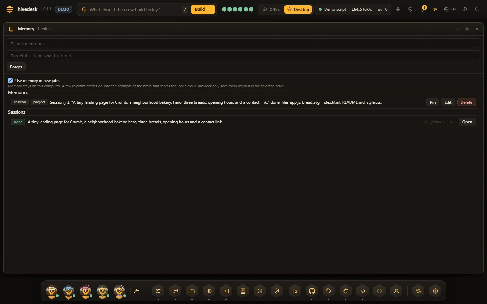
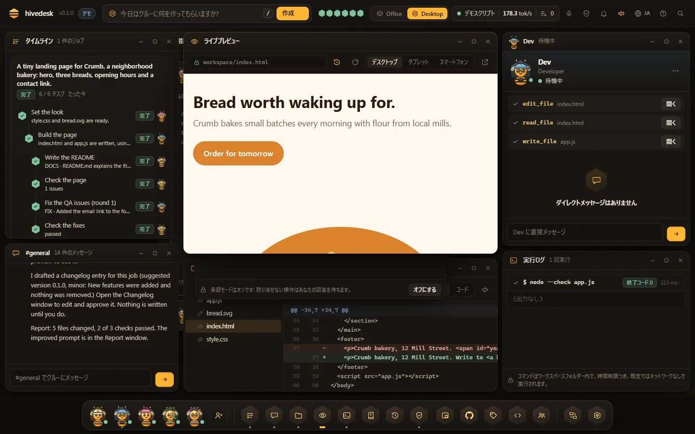


npx hivedesk --demo 的真实截图,它回放一项脚本化的工作,并把每个事件标记为演示。Code together 的画面来自双浏览器端到端测试。
下载
适用于 Windows、macOS 和 Linux 的桌面应用。每个下载都自带 Node.js,不需要事先安装任何东西。
首个版本今天发布。
解压后双击 hivedesk.exe。它还没有代码签名,所以 SmartScreen 会提示“Windows 已保护你的电脑”: 选择 更多信息,然后选择 仍要运行。

谢谢!请按以下步骤操作。
hivedesk.exe。解压后把 hivedesk.app 移到“应用程序”。它还没有经过公证: 第一次打开时,进入 系统设置,隐私与安全性,点击 仍要打开。
谢谢!请按以下步骤操作。
hivedesk.app 移到“应用程序”。运行 tar -xzf hivedesk-linux-x64.tar.gz,然后运行 ./hivedesk/hivedesk。或者用 AppImage: 先 chmod +x,再运行它。窗口需要 WebKitGTK;没有的话,hivedesk 会在浏览器中打开。
谢谢!请按以下步骤操作。
tar -xzf hivedesk-linux-x64.tar.gz。./hivedesk/hivedesk(或者 chmod +x 后运行 AppImage)。下载包还没有签名,也不会自动更新;本地模型会在首次运行时下载。想要一个小脚本?Windows、macOS 和 Linux 的启动器会检查是否有 Node.js 20 或更高版本,然后运行 npx hivedesk@latest;如果没有 Node.js,它们会打开官方下载页面并说明原因。
任何装有 Node.js 20 或更高版本的系统。向导会问几个问题,每个都有推荐的默认值,所以一路按回车也行。
npx hivedesk
$ npx hivedesk
? 语言 简体中文
? 项目文件夹 当前文件夹
你的电脑: GPU 6 GB,内存 16 GB,可用磁盘 212 GB
? 团队用哪个大脑? 编程模型 3B,2.1 GB 推荐
? 现在下载? 是
? 团队如何工作? 每个有风险的步骤都要批准
? 团队 Mel, Dev, Designer, QA, Writer
正在打开 Hive
软件包页面及其版本。全局安装后即可使用简单的 hivedesk 命令。
npm i -g hivedesk读每一行代码,提 issue,发拉取请求。点个星能帮更多人找到它。
| 你的硬件 | 模型 | 下载 | 运行在 |
|---|---|---|---|
| 显存 10 GB 或以上的 GPU | 14B | 9.0 GB | GPU |
| 显存 7 到 10 GB 的 GPU | 7B | 4.7 GB | GPU |
| 显存 4 到 7 GB 的 GPU(例如 6 GB 显卡) | 3B | 2.1 GB | GPU,所有层 |
| 没有可用 GPU,内存 16 GB 或以上 | 3B | 2.1 GB | CPU |
| 没有可用 GPU,内存 8 到 16 GB | 1.5B | 1.1 GB | CPU |
| 内存低于 8 GB | 0.5B | 0.5 GB | CPU,并提示结果会比较基础 |
紧凑的量化开源编程模型,从官方仓库下载,并用公布的 SHA-256 校验。可以在设置中或用 --model 14b|7b|3b|1.5b|0.5b 更换。出自 FIRST-RUN.md。
坦诚说明局限
在你自己电脑上的小模型既私密又不花钱。但它也比数据中心里最大的模型更慢、能力更弱。以下是可以期待的效果。
没有模型就什么也生成不了。首次运行会下载一个,0.5 到 9.0 GB,除非你已经在用的本地运行环境正在运行,或者你添加了自己的 API 密钥。
工作者轮流使用同一个模型,所以一项工作要花几分钟,而不是几秒。只用 CPU 时,模型每秒只能写出几个 token。
一次只提一件事,读 diff,批准各个步骤。一口气做出大型应用,超出了小模型的能力。
| 硬件 | 运行的模型 | 速度 | 适合 |
|---|---|---|---|
| 没有 GPU | 0.5B 或 1.5B 编程模型,内存 16 GB 时可用 3B | 慢,每秒几个 token | 单个文件的小任务。需要耐心等待。 |
| 4 到 7 GB 的 GPU | 3B 编程模型,完全在 GPU 上 | 能用 | 小任务、组件、脚本、文案。 |
| 7 到 10 GB 的 GPU | 7B 编程模型 | 不错 | 中小型任务,由你掌舵。 |
| 10 GB 或以上,或者一个密钥 | 14B 编程模型、你已经在用的本地运行环境里更大的模型,或者用你自己的 API 密钥调用云端模型 | 更快 | 更大的工作和更长的计划。 |
当你拆分工作、掌舵并批准时,它的效果最好。时间线和审批模式正是为此而设。
你的文件留在你的电脑上。 网络只用于首次运行时的下载,之后只用于你开启的功能: 借出模式和 Code together(与你配对的朋友)、GitHub、使用你自己密钥的云服务商、来自 URL 的扩展,以及语音模式下浏览器的语音识别。借出模式只发送模型的提示词和回答: 一次一个请求,每分钟最多 20 个,提示词最多 120,000 个字符,朋友可以随时停止。没有内置 TURN 中继,所以两个非常严格的网络之间可能连不上。
常见问题
不需要。默认使用在你自己电脑上运行的模型。密钥是可选的,只在你想用自己的 API 密钥调用云端模型时才需要;它们保存在这台电脑的密钥库里。
模型根据你的硬件在 0.5 GB 到 9.0 GB 之间,运行环境另需几百 MB。在 100 Mbit/s 下,3B 模型大约 3 分钟,7B 大约 6 分钟。只需一次;之后每次运行,加载完模型就能用。
可以,在 CPU 上用小模型: 内存 16 GB 用 3B,8 到 16 GB 用 1.5B,更少的话用 0.5B。速度慢,每秒几个 token。小任务没问题,但需要耐心等待。
在规划之前,Mel 会把你的需求变成一份简报: 目标、要构建什么、约束、检查,以及待确认的问题。在你使用简报、编辑它或保留原文之前,工作会一直等待。你可以在设置里关闭它。
语音使用浏览器的语音识别,可能会把音频发送到浏览器厂商的服务。有本地语音时,Mel 的语音回复在你的电脑上生成。完全本地的语音识别目前还没有提供。
工作者只拥有限定在工作区文件夹内的工具,试图跳出该文件夹的路径会被拒绝。命令默认带有超时、输出上限,并且不联网;审批模式会让有风险的步骤等你处理。扩展在沙箱中运行,只拥有你同意的权限。
它们是没有代码签名的普通脚本,所以 Windows SmartScreen 和 macOS Gatekeeper 会在首次运行前询问。每个启动器只检查 Node.js 并运行 npx hivedesk@latest。
可以: npx hivedesk --demo 会回放一项脚本化的工作。它展示的一切都标记为演示。
删除 ~/.hivedesk/(运行环境、模型、你的设置)以及项目里的 .hivedesk/ 文件夹。如果是用 npm 安装的,还要运行 npm rm -g hivedesk。
一条命令,团队就在你的桌面上。
npx hivedesk